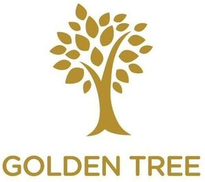

Trade Mark Journal No.2025/022 30 May 2025
WO0000001830654 (3,5,30)
Office of origin: European Union Intellectual Property Office (EUIPO)
Date of International Registration:28 October 2024
Date of designation in the UK:
28 October 2024

The mark contains the colours Gold and white.
Wording "GOLDEN TREE" in uppercase letter in gold, the tree design in gold on a white surface.
International priority date claimed: 9 October 2024
(European Union Intellectual Property Office (EUIPO))
(019089141)
- Class 3
- Cosmetic creams and lotions; cosmetic creams; moisturising creams; cosmetic nourishing creams; creams for cellulite reduction; moisturising creams, lotions and gels; anti-wrinkle cream; beauty serums; anti-ageing serum; serums for cosmetic purposes; anti-aging serum for cosmetic use; facial serum for cosmetic use; skin relief serum [cosmetic]; skin calming serum; body cream; face and body creams; body and facial creams [cosmetics]; body lotions; antiperspirants [toiletries]; body deodorants [perfumery]; moisturising gels [cosmetic]; face creams for cosmetic use; cosmetic facial lotions; cosmetics; cosmetics and cosmetic preparations; cosmetics in the form of creams; cosmetics in the form of lotions; night creams [cosmetics]; hydrating creams for cosmetic use; recovery creams for cosmetic use.
- Class 5
- Antioxidants; anti-oxidant food supplements; albumin dietary supplements; bee pollen for use as a dietary food supplement; dietetic foods for use in clinical nutrition; dietary supplemental drinks; enzyme dietary supplements; glucose dietary supplements; gummy vitamins; food for diabetics; nutritional supplements; dietary fibre; casein dietary supplements; linseed oil dietary supplements; linseed dietary supplements; lecithin dietary supplements; royal jelly dietary supplements; mixed vitamin preparations; powdered nutritional supplement drink mix; powdered fruit-flavored dietary supplement drink mix; mineral dietary supplements; mineral nutritional supplements; mineral dietary supplements for humans; multi-vitamin preparations; sugar substitutes for diabetics; nutraceuticals for use as a dietary supplement; pollen dietary supplements; meal replacement powders; wheat dietary supplements; nutritional supplement meal replacement bars for boosting energy; dietary fiber to aid digestion; food supplements; yeast dietary supplements; soy protein dietary supplements; food supplements consisting of amino acids; food supplements consisting of trace elements; dietary supplements for human beings; dietary supplements for controlling cholesterol; nutritional supplements consisting of fungal extracts; dietary supplements consisting of vitamins; nutritional supplements consisting primarily of zinc; nutritional supplements consisting primarily of calcium; nutritional supplements consisting primarily of magnesium; nutritional supplements consisting primarily of iron; dietary and nutritional supplements; vitamin a preparations; vitamin b preparations; vitamin c preparations; vitamin d preparations; preparations for use as additives to food for human consumption [medicated]; probiotic supplements; propolis dietary supplements; protein dietary supplements; wheat germ dietary supplements; cod liver oil; diet capsules; slimming pills; liquid vitamin supplements; liquid herbal supplements; vitamins and vitamin preparations; vitamin drops; vitamin tablets; vitamin supplements; vitamin and mineral supplements; vitamin drinks; vitamin preparations; effervescent vitamin tablets; vitamin preparations in the nature of food supplements; ground flaxseed fiber for use as a dietary supplement; herbal dietary supplements for persons special dietary requirements; antifungal preparations.
- Class 30
- Coffee, teas and cocoa and substitutes therefor; coffee extracts for use as substitutes for coffee; artificial coffee; muesli consisting predominantly of cereals; crackers made of prepared cereals; chips [cereal products]; muesli; cereal products in bar form; snack foods made of whole wheat; cereal-based snack food; snacks manufactured from muesli; muesli bars; cereal bars and energy bars; oat bars; snack foods prepared from maize; snack foods made from corn; chocolate bars.
GOLDEN TREE d.o.o.
Representative: Nejc Setnikar, Odvetništvo Novak, d.o.o., o.p.,, Vilharjeva cesta 29, SI-1000 Ljubljana, SLOVENIA